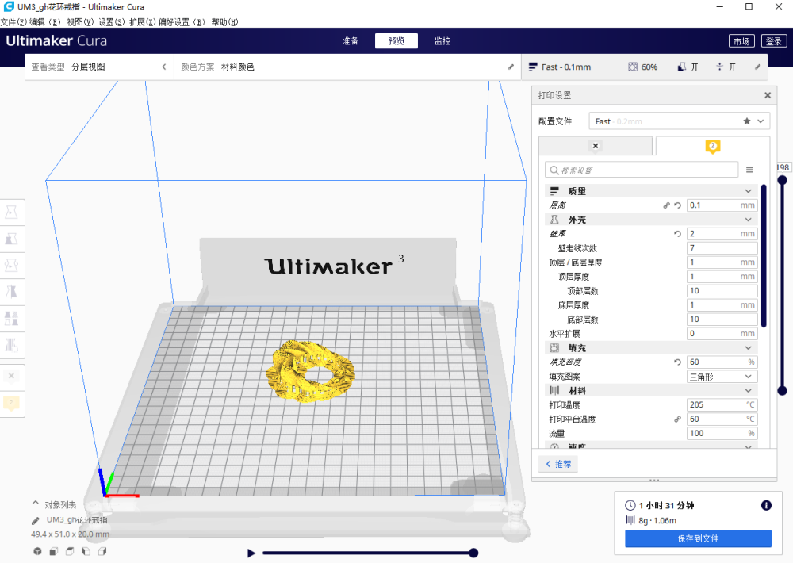

3D打印
学习3D打印背景
3D打印技术是基于“离散/堆积成型”的成型思想，用层层加工的方法将成型材料“堆积”而形成实体零件，
专业术语也称为“快速成型技术”或“叠加制造技术”。
机器设置

使用切片软件设置参数

使用3D打印机制作
使用极光尔沃A3S打印机完成制作。
表面处理

01.剪钳
剪钳有很多类，在模型制作上的称之为水口钳。由于拼装模型市场发展成熟，在电商平台上可以找到很多不同种类满足不同要求的水口钳。其中区别较大的是单刃和双刃水口钳，普通的双刃水口钳剪力好，而单刃水口钳主要是为了防止剪口因为剪应力挤压，材料密度变化导致发白。
剪钳的作用主要是为了在不损伤模型的情况下快捷地拆除支撑。建议配置2把，一把便宜的尖嘴水口钳，将支撑从靠近模型的地方剪短，尖嘴可有效应对复杂的部位。一把锋利的弯嘴水口钳，把在模型上的最后一小段支撑平整地剪除，弯嘴有更广的适用性。
02.笔刀
笔刀在处理模型表面时十分好用，这种刀具类似一根带刀片的笔，在处理一些细节上，在手握发力和落刀控制上要优于一般刀具。刀头可更换，根据自己的使用情况可安装不同样式的刀头。在笔刀选择上，建议选择非圆形的握笔，避免笔刀在桌面翻滚时被弄伤。
在使用水口钳进行表面简单处理之后，便可使用笔刀紧贴模型进行铲除，除去细小凸起。笔刀建议推铲的手法，其刀片的切割能力较弱，切容易划伤手部。对于弧面残留瑕疵的处理，尤其是内凹弧面，不要追求一刀铲平，容易切伤模型，应轻力多次铲除。
03.砂纸
对表面进行打磨时，最常用的工具便是砂纸。其成本较低，而且可在复杂结构上使用。砂纸主要选择2种款式，一个是普通砂纸，还有是海绵砂纸，海绵砂纸用于贴合在曲面上进行打磨，不会损伤曲面。在目数选择，只要选择200目到800目范围内即可。
使用砂纸时，可根据打磨面积裁剪小条，把砂纸条贴合在长条方块上，拇指和中指捏住长条2端进行打磨（类似打磨条一样的使用方法，这种方法发力更好控制，发力方向平行于模型表面而不会导致打磨过渡）。
在打磨时，可加水在打磨面上，能对砂纸和模型其保护作用。打磨时从低目砂纸开始打磨，打磨到表面较少碎屑时更换更高目砂纸。
使用多次的砂纸可留存，当更高目砂纸使用（如200目砂纸使用几次后可继续作为400目、600目等砂纸使用。这也是为什么只推荐选择最高800目的砂纸的原因）。
04.锉刀
前面为什么不推荐200目以下的砂纸？因为对低于200目的砂纸打磨效果，更推荐使用锉刀，打磨能力是相同的，而锉刀具有重复使用的优点。锉刀有很多种规格和样式，可选择耐磨佳的、齿密的小锉刀，配置上诸如平锉刀、弧面锉刀和三角锉刀等样式。
使用锉刀来作为强力的打磨工具，在使用较久以后，锉刀面会沉积碎屑，可通过冲洗、烧熔等方式去除，恢复锉刀的打磨能力。